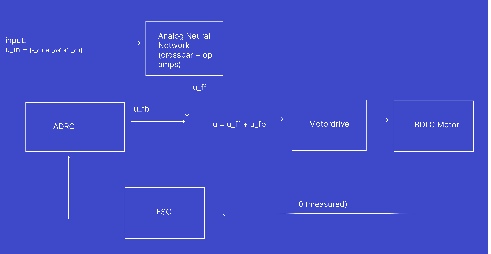
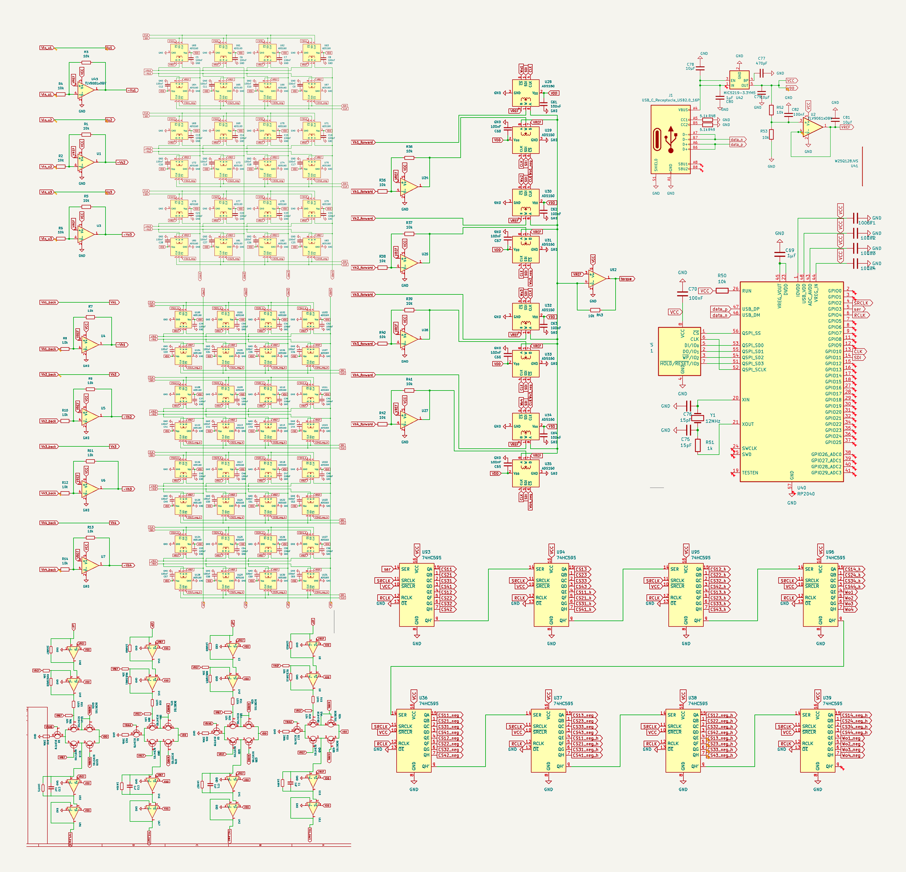
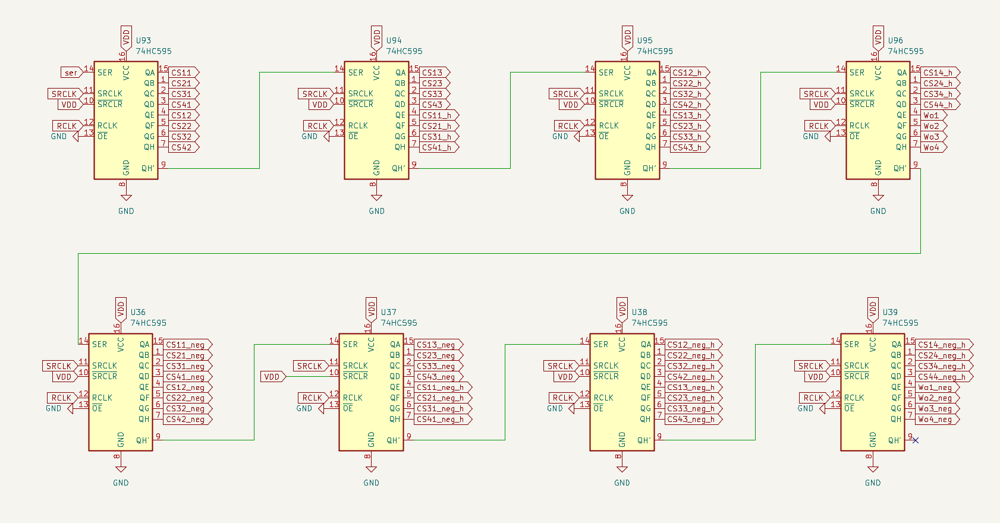
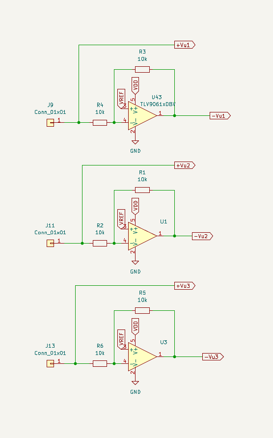
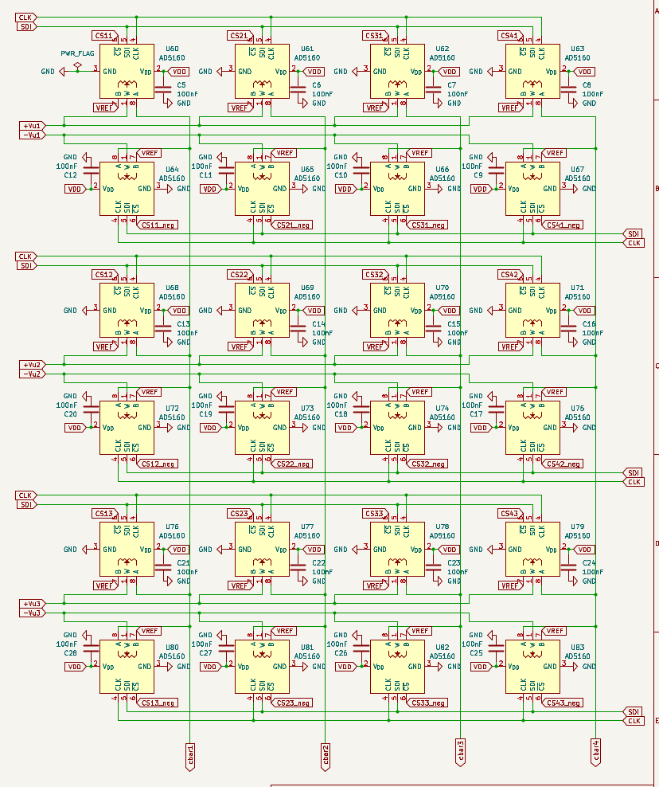
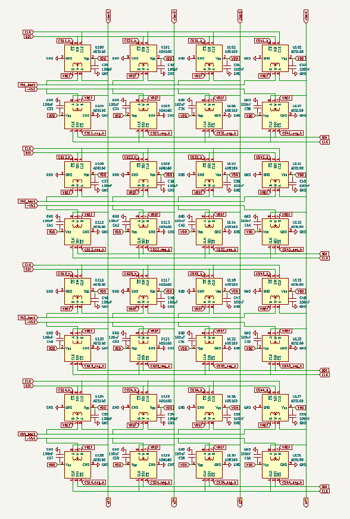
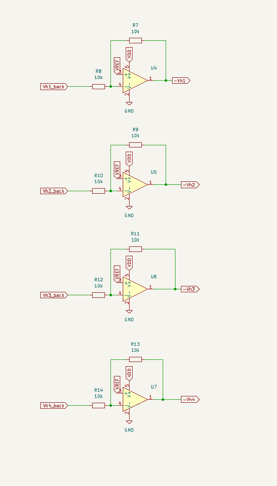
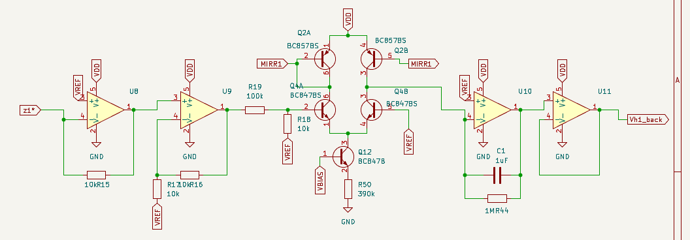
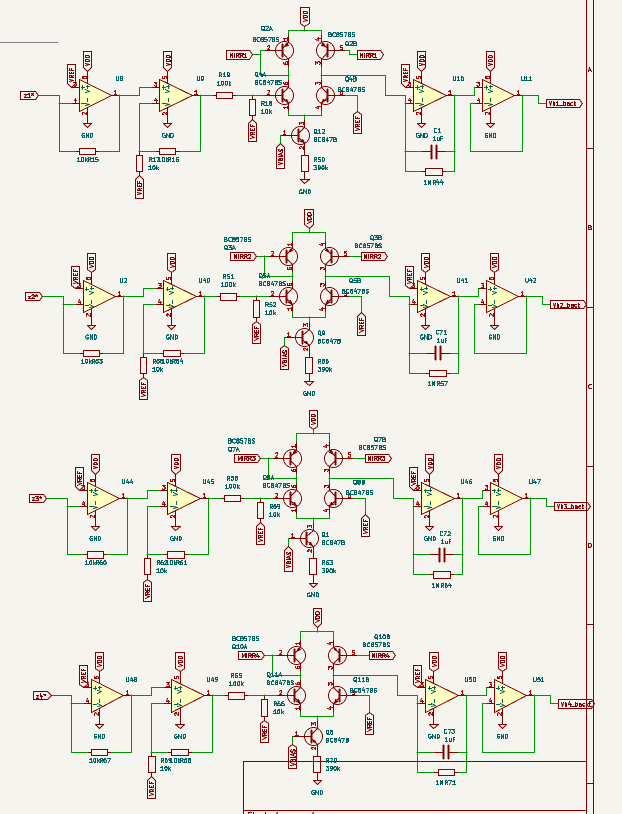
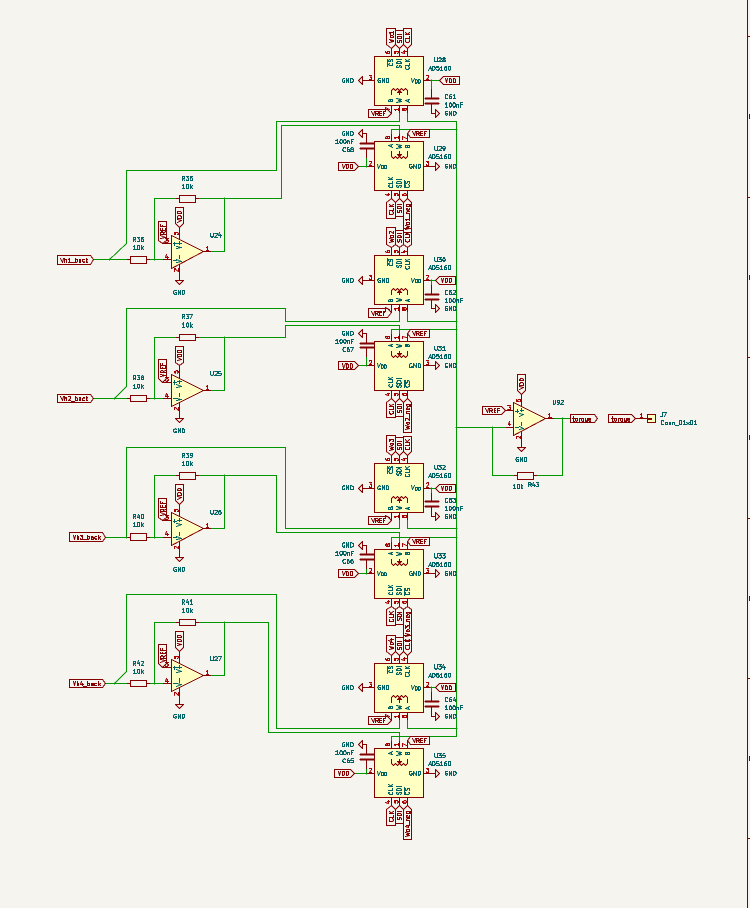

Introduction and Motivation
One small size Satellites like CubeSat, performance in control tasks such as Earth observation, optical downlink, and formation flying depend on precise and accurate pointing. In CubeSat Specifically, the performance of these pointing tasks are limited by power and thermal budget constraints. Power generation on these small platforms is constrained by the limited surface area available for solar cells (Weston et al., 2025).
Heat produced in vacuum is very difficult for small spacecrafts that only weigh a few kilograms when the only path for heat dissipation is through radiation. NASA's small-spacecraft thermal energy balance shows this clearly: q_{\text{solar}} + q_{\text{albedo}} + q_{\text{planetshine}} + Q_{\text{gen}} = Q_{\text{stored}} + Q_{\text{out,rad}}, the only outbound path is Q_{\text{out,rad}}, heat emitted via radiation, and its magnitude depends on "the surface area designated as radiator space" (Weston et al., 2025, ch. 7). This becomes a problem when Radiation-hardened digital processors capable of running high-bandwidth model-based control (H-infinity, LQR, or model predictive control) draw watts of power. On a spacecraft measured in units of 10 cm, that area is small. Some common solutions to this Size, Weight, and Power (SWaP) bottleneck is using lightweight PID controllers that run at only tens to hundreds of hertz. This leaves precision and control performance on the table.
In advanced and thermally expensive controllers, the main computational expense comes from the nonlinear inverse-dynamics computations. My proposed solution is to offload this to a feedforward analog neural network that computes it as continuous time, current mode operations through analog in-memory computing. This process allows the multiply-accumulate to be performed by the physics of an array of resistors rather than by arithmetic instructions (Mannocci et al., 2026). This open-loop system is then closed with a digital Active Disturbance Rejection Controller (ADRC) and its Extended State Observer (ESO), which is cheap enough to run on the microcontroller a CubeSat already carries (Han, 2009, as cited in Herbst, 2013). The main question this experiment answers is whether a mixed-signal control architecture (learned analog feedforward path then closed by a digital ADRC loop) can deliver high precision and robust attitude control while keeping within the power and thermal budgets of CubeSat sized satellites, without measuring the spacecraft's dynamics in advance.
To answer this, five controllers will be compared: a tuned digital PID, representing the low-power controller a CubeSat runs today; the analog neural network alone, run open-loop to show that feedforward without any feedback drifts off and cannot stand on its own as a controller; the analog neural network closed with a simple digital PID, which isolates how much the feedforward alone contributes with a conventional feedback loop; the proposed analog neural network closed with digital ADRC; and an idealized digital ADRC handed the exact plant model, included as a best-case upper bound. Comparing PID to NN + PID isolates the benefit of the analog feedforward, while comparing NN + PID to NN + ADRC isolates the benefit the ESO adds on top.
The SWaP Bottleneck
- Power and Heat: Advanced digital controllers need watts of compute. Because a CubeSat's thermal path in a vacuum is only through radiation, heat is very expensive to dissipate, and the radiating area available scales with a body measured in units of 10 cm (Weston et al., 2025, ch. 7).
- Loop Rate: a low power processor running a PID controller at tens to low hundred of Hertz, caps how fast disturbances can be rejected.
- Model Fragility: Model based controls degrade when parameters drift and do not perform with less precise models. ADRC maintains robustness even against unmodeled dynamics and external disturbances; because it lumps all modeling error into one estimated signal, only a very coarse process model is needed to design the loop (Herbst, 2013).
General Setup Overview


The complete board. Reading left to right: the three input channels and their inverters, the two potentiometer crossbars (W_{ih} above, W_{hh} below), the four \sigma blocks and integrators along the bottom, the output weight stage and torque summing amplifier in the center, and on the right the RP2040, its flash and USB-C interface, and the eight 74HC595 shift registers that carry weight code words to all 64 potentiometers.

The weight-loading path. Eight 74HC595 registers are daisy-chained through QH' into SER, giving 64 outputs from three microcontroller pins (ser, SRCLK, RCLK). The top row addresses the positive leg of each signed weight pair and the bottom row the negative leg; RCLK is common to all eight, so every weight on the board updates on the same edge rather than rippling in one at a time.
Input
The feedforward network is driven by the commanded trajectory and not by the measured state. The guidance layer, at every instant, produces a reference angle, reference angular velocity, and reference angular acceleration for the axis being controlled:
Each component is carried as a voltage referenced to the mid-supply rail VREF, so a signed quantity maps onto a single-supply node (Vref = VDD/2). This is the standard single supply technique: "a source of 'half-supply' creates a 'virtual ground' exactly half way between the positive supply and ground potentials" (Carter & Brown, n.d.):
where k_i converts a physical quantity into volts. Each k_i value is chosen so that the largest value the channel ever becomes lands within the bounds of VREF which is \pm 1.65 V; a bound the electronics of this board can go before clipping occurs.

The three input channels. Each connector (J9, J11, J13) drives a unity-gain inverting amplifier referenced to VREF, producing the negated rail that the signed weight pairs of Stage 1 need: +Vu1 is taken straight from the connector and -Vu1 comes from U43, with R_3 = R_4 = 10\ \text{k}\Omega setting a gain of exactly -1 about VREF.
Analog Neural Network
The network is a continuous-time recurrent neural network (CTRNN) with three inputs, four hidden states, and one torque output. It functions to approximate the nonlinear inverse dynamics \tau_{\text{ff}} = f^{-1}(u), the torque that would give you the trajectory on the spacecraft.
Stage 1 Input Projection
The input vector is projected onto the four hidden channels by the input weight matrix W_{ih} \in \mathbb{R}^{4 \times 3}. This is physically represented by the crossbar_u sheet: twelve weights, one per intersection of an input column and a hidden row.
Vector multiplication is performed through Ohm's law and the sum is Kirchhoff's current law: each weight sets a conductance G^{ih}_{ji}, the input voltage across it produces a current I_{ji} = G^{ih}_{ji} V_{u_i}, and the currents landing on the same virtual-ground summing node add themselves. A 4 \times 3 matrix–vector product costs no clock cycles and no multiplier: it happens at the speed of the wire. This is the defining property of analog in-memory computing, in which Ohm's and Kirchhoff's laws act as "physical surrogates of multiply-accumulate operations" in a crossbar array rather than the operation being performed by arithmetic hardware (Mannocci et al., 2026).

The crossbar_u sheet, W_{ih}. Three input rows run horizontally, each carrying both polarities (+Vu1/-Vu1 and so on); four columns descend to the summing nodes cbar1…cbar4. Every intersection holds two AD5160 potentiometers (one tapping the positive rail, one the negative) so the twelve weights of W_{ih} occupy twenty-four parts, U60 through U83. Their chip-select lines (CS11, CS11_neg, …) come from the shift-register chain.
A potentiometer conductance is strictly positive, so a signed weight is built from two paths driven by equal and opposite voltages. Every signal exists on the board in both polarities about VREF.
giving a weight of either sign from strictly positive conductances:
Each conductance is set by an AD5160 8-bit digital potentiometer and loaded over the SDI/CLK shift-register chain. The part is available with end-to-end resistances of 5 kΩ, 10 kΩ, 50 kΩ, and 100 kΩ; this board uses the 10 kΩ variant (Analog Devices, n.d.).
Stage 2 Recurrent Projection
The hidden state is fed back on itself through W_{hh} \in \mathbb{R}^{4 \times 4} (the crossbar_h sheet, sixteen weights, driven by the Vh1_back … Vh4_back return nets). This is what gives the network memory: the output depends on the history of the command, not just its current value. The recurrent weight matrix is what makes the network a dynamical system.

The crossbar_h sheet, W_{hh}. Same construction as the input crossbar but square: four rows of returning hidden states against the four summing nodes, thirty-two potentiometers (U100–U131) for sixteen signed weights. Every row reaches every column, which is what allows the off-diagonal coupling that lets units oscillate and lead rather than behaving as four independent filters.

The negated hidden-state rails. Each buffered state Vh1_back…Vh4_back passes through a unity-gain inverter about VREF (U4–U7, 10 k\Omega pairs) to produce -Vh1…-Vh4. These four amplifiers are what make the recurrent weights signed: without an inverted copy of each state, every entry of W_{hh} could only ever be positive, since a potentiometer's conductance cannot be.
Stage 3 Pre-activation
Both crossbars discharge into the same summing node, so the two products add before the nonlinearity:
There is no bias term, and the part count is what rules one out. The board carries 64 potentiometers, which is exactly 2 \times (12 + 16 + 4): twelve weights in W_{ih}, sixteen in W_{hh}, four in W_o and each requiring a pair of pots, since a conductance is strictly positive and a signed weight has to be built as the difference of two of them.
There is no bias term because a bias would be a constant current pushed into the summing node regardless of the command, so the network would ask for some fixed torque even when the guidance layer had commanded nothing. Here z = 0 at zero command, \sigma(0) = 0, every hidden state settles to zero, and the readout W_o h goes to zero with it: idle is idle.
Physically, the sum is performed by a transimpedance amplifier per row (U8, U2, U44, U48), whose inverting input is the crossbar node held at VREF and whose feedback resistor is 10 k\Omega (R15, R53, R60, R67). Because of the amplifier's high gain, only a very small voltage appears across its inputs, so the inverting node "can be assumed to be ground — a 'virtual ground'" (Carter & Brown, n.d.). That is what makes the summing exact: negative feedback holds the node at a fixed potential regardless of how much current arrives, so the individual crossbar currents do not interact and none of them modulates the voltage the others see. The four pre-activations appear on the schematic as the nets z1*, z2*, z3*, z4*; the asterisk records that these are the inverted sums, since a transimpedance stage inverts. The sign is restored by the inverting integrator of Stage 5.
Each row's transimpedance output is then scaled by a non-inverting stage of gain 1 + R_{16}/R_{17} = 2 (U9, U40, U45, U49) before reaching the nonlinearity. It is there because one resistor cannot both keep U8 inside its supply limit and deliver enough voltage to saturate the \sigma block. Made large, R_{15} hands the \sigma block plenty of signal but lets U8 slam into its rail on ordinary crossbar currents; made small, it keeps U8 safe but leaves the \sigma block short of saturation. Doubling the voltage afterwards lets R_{15} stay small while the \sigma block still gets the signal it needs.
Stage 4 Nonlinearity
In the trained model each pre-activation passes through a saturating, odd, monotone squashing function:
\tanh was used because it is zero-centered and odd, \sigma(-z) = -\sigma(z), which matches a torque command that must be symmetric about zero for clockwise and counter-clockwise rotation. It also saturates, which is the safety property that matters in flight: however large the commanded input, |\sigma(z_j)| < 1 bounds every hidden state through Stage 5, and therefore bounds the feedforward torque the network can ever ask for. The neurons in the earliest networks of this family were strictly on or off. Hopfield (1984) showed that replacing them with continuous ones, whose output follows a smooth S-shaped curve of their input as shown here on this board, leaves the network's collective behavior essentially unchanged, and that a network of this kind can be built directly from ordinary amplifiers and resistors.
The nonlinearity is also what makes this a neural network rather than a filter. Stages 1, 2, 3, 5, and 6 are all linear maps, and a composition of linear maps is linear; without \sigma the entire block collapses to a transfer function and cannot approximate a nonlinear inverse-dynamics map at all.

One complete hidden unit, left to right: U8 converts the crossbar's summed current into the pre-activation z1*; U9 scales it by two; R19 and the 10 k\Omega shunt attenuate that swing by 1/11 to reach the differential pair Q4A/Q4B; the Q2A/Q2B mirror above returns the pair's output as a signed current; Q12 and R50 set the tail current from VBIAS; and the result is delivered into U10's summing node, where C1 and R44 form the leaky integrator whose output U11 buffers back out as Vh1_back. Note that the pair's collectors connect directly to the integrator input, there is no resistor between the \sigma block and the integrator.
Stage 5 Integration
The nonlinearity is proportional to the derivative of the hidden state, not the state itself, which is what makes the network continuous-time rather than a clocked layer. In the idealized CTRNN this is a pure integration:

All four hidden units on the op_amps sheet, one per row and identical apart from designators. The integrators are visible at the right of each row as a 1 µF capacitor in parallel with a 1 M\Omega resistor, the parallel pair is what makes the integration leaky, and their product sets \tau_h = 1 s. The four VBIAS labels all reach the same divider, so a single bias network sets the tail current, and therefore the activation amplitude, for every unit at once.
Each hidden unit has one op-amp integrator (U10, U41, U46, U50) with two parts around it: a feedback capacitor C = 1\ \mu\text{F} (C1, C71, C72, C73) and a feedback resistor R_f = 1\ \text{M}\Omega (R44, R57, R64, R71) placed in parallel with the capacitor. The \sigma block of Stage 4 delivers a current into the summing node, so the integrator acts as a transresistance.
At the virtual-ground node three currents meet and must cancel: the current arriving from the \sigma block, the current leaking out through R_f, and the current charging C. Writing h_j for the integrator output measured from VREF,
Multiplying through by R_f puts this in standard first-order form:
The minus sign left on R_f I_{\sigma} cancels against the inversion the z1*…z4* nets already carry from Stage 3. Substituting I_{\sigma} = I_{\text{tail}}\,\sigma(z_j) then gives the standard leaky CTRNN state equation, the same first-order form used in continuous analog networks of graded-response units (Hopfield, 1984):
At every instant the state h_j is heading toward the value G\,\sigma(z_j), and \tau_h sets how quickly it closes the gap. With \tau_h = 1 second, a unit takes a few seconds to respond fully, and what it holds at any moment reflects roughly the last second of its input.
The two constants do different jobs. R_f converts the activation current into a voltage (1 M\Omega means one microamp of I_{\sigma} produces one volt of h_j). The \sigma block's output can never exceed I_{\text{tail}} = 1.57\ \muA, so the state can never exceed G = R_f I_{\text{tail}} = 1.57 V. No command can push a hidden state past 1.57 V, which sits just inside the \pm 1.65 V supply. Since Stage 6 builds the torque command out of these states, it bounds the torque the network can ask for as well.
The leak resistor is what makes the state usable over a long mission. Real transistors are never perfectly matched, and in the \sigma block that mismatch leaves a small error current flowing even when the input is zero. An integrator with no leak accumulates that error forever.
Each h_j is buffered by U11, U42, U47, U51 and returned to crossbar_h as Vh1_back…Vh4_back.
Stage 6 Output
The four hidden states are collapsed into a single feedforward torque by the output weight row vector W_o \in \mathbb{R}^{1 \times 4}: the torque sheet, where Wo1…Wo4 set the summing-amplifier gains and the result leaves on the torque net:

The torque sheet, W_o. On the left, U24–U27 invert the four hidden states to give each output weight its negative rail; the eight potentiometers U28–U35 form the four signed pairs, and all of their outputs land on one summing node at U92, whose 10 k\Omega feedback resistor R43 converts the total current back into the single torque voltage leaving on J7. A row vector of four weights collapses to a single amplifier.
Final formulation
Collecting the six stages, the whole analog block is two lines:
Fully expanded, with u = [\theta_{\text{ref}}, \dot{\theta}_{\text{ref}}, \ddot{\theta}_{\text{ref}}]^{\mathsf{T}} and \sigma applied element wise:
There are 32 trainable parameters: 12 in W_{ih}, 16 in W_{hh}, and 4 in W_o.
These 32 numbers are found offline by gradient descent on a simulated environment, then written into the potentiometer chain. Once loaded, the board holds them statically. This computation runs continuously rather than at a loop rate unlike the digital controller. The digital side never computes \tau_{\text{ff}}; it only measures the resulting error and corrects it.
References
Analog Devices. (n.d.). AD5160: 256-position SPI-compatible digital potentiometer [Data sheet]. Retrieved August 12, 2026, from https://www.analog.com/media/en/technical-documentation/data-sheets/AD5160.pdf
Beer, R. D. (2022). The global structure of codimension-2 local bifurcations in continuous-time recurrent neural networks. Biological Cybernetics, 116, 501–526. Preprint available at https://arxiv.org/abs/2111.04547
Carter, B., & Brown, T. R. (n.d.). Handbook of operational amplifier applications (SBOA092B). Texas Instruments. Retrieved August 12, 2026, from https://www.ti.com/lit/an/sboa092b/sboa092b.pdf
Fortunato, M. (2012). Temperature and voltage variation of ceramic capacitors, or why your 4.7 µF capacitor becomes a 0.33 µF capacitor (Tutorial 5527). Maxim Integrated. https://www.analog.com/en/resources/technical-articles/temperature-and-voltage-variation-ceramic-capacitor.html
Gao, Z. (2003). Scaling and bandwidth-parameterization based controller tuning. Proceedings of the 2003 American Control Conference, 4989–4996. https://doi.org/10.1109/ACC.2003.1242516 (Open conference-proceedings copy: http://congres.cran.univ-lorraine.fr/2003/ACC%202003/Papers/FP03-3.PDF)
Herbst, G. (2013). A simulative study on active disturbance rejection control (ADRC) as a control tool for practitioners. Electronics, 2(3), 246–279. https://doi.org/10.3390/electronics2030246 (Open access; corrected preprint at https://arxiv.org/abs/1908.04596)
Hong, B., & Hajimiri, A. (2017). Analysis of a balanced analog multiplier for an arbitrary number of signed inputs. International Journal of Circuit Theory and Applications, 45(4), 483–501. https://doi.org/10.1002/cta.2243 (Author version: https://chic.caltech.edu/wp-content/uploads/2016/08/BHongMultiplierCTA2016-1.pdf)
Hopfield, J. J. (1984). Neurons with graded response have collective computational properties like those of two-state neurons. Proceedings of the National Academy of Sciences, 81(10), 3088–3092. https://pmc.ncbi.nlm.nih.gov/articles/PMC345226/
Mannocci, P., Larelli, G., Bonomi, M., & Ielmini, D. (2026). Achieving high precision in analog in-memory computing systems. npj Unconventional Computing, 3(1). https://doi.org/10.1038/s44335-025-00044-2
Palermo, S. (2012). Lecture 20: Bandgap reference [Lecture notes]. ECEN474: (Analog) VLSI Circuit Design, Analog & Mixed-Signal Center, Texas A&M University. https://people.engr.tamu.edu/spalermo/ecen474/lecture20_ee474_bandgaps.pdf
Trischler, A. P., & D'Eleuterio, G. M. T. (2016). Synthesis of recurrent neural networks for dynamical system simulation. Neural Networks, 80, 67–78. https://doi.org/10.1016/j.neunet.2016.04.001 (Open preprint: https://arxiv.org/abs/1512.05702)
University of Michigan. (n.d.). Introduction: PID controller design. Control Tutorials for MATLAB and Simulink. Retrieved August 12, 2026, from https://ctms.engin.umich.edu/CTMS/index.php?example=Introduction§ion=ControlPID
Weston, S. V., Burkhard, C. D., Stupl, J. M., Ticknor, R. L., Yost, B. D., Austin, R. A., Galchenko, P., Newman, L. K., & Santos Soto, L. (2025). State-of-the-art small spacecraft technology (NASA/TP—20250000142). National Aeronautics and Space Administration. https://ntrs.nasa.gov/citations/20250000142